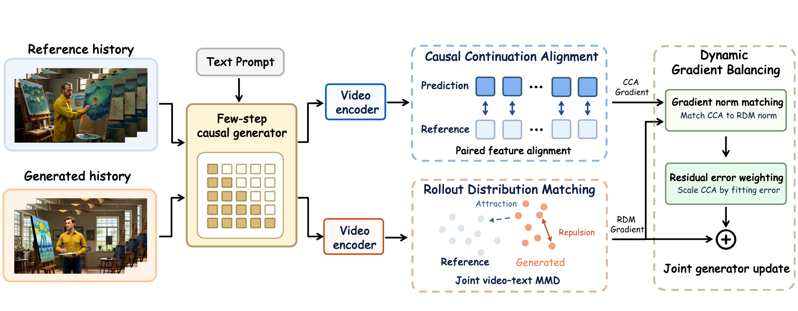
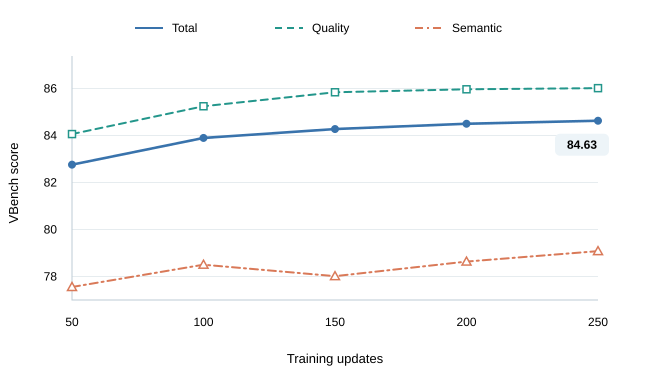

Learn the continuation
Causal Continuation Alignment learns how a video continues through paired feature alignment under reference histories.
1 Beihang University2 JD Future Academy
Learn how videos continue and what they look like — together,
directly in representation space.
Few steps. Vivid worlds.
Two signals. One training stage.
Causal Continuation Alignment learns how a video continues through paired feature alignment under reference histories.
Rollout Distribution Matching aligns self-generated and reference video distributions in frozen feature spaces.
Gradient Norm Matching balances the two signals; Residual Error Weighting adapts CCA’s contribution.

250 updates. 84.63 VBench Total.
| Model | Params | Resolution | Throughput ↑ (fps) | Latency (seconds) | Total ↑ | Quality ↑ | Semantic ↑ |
|---|---|---|---|---|---|---|---|
| Bidirectional video diffusion models | |||||||
| LTX-Video-1.9B | 1.9B | 768 × 512 | 8.98 | 13.5 | 79.83 | 81.88 | 71.62 |
| Wan2.1-1.3B | 1.3B | 832 × 480 | 0.78 | 103 | 83.37 | 84.30 | 79.65 |
| Autoregressive video diffusion models | |||||||
| NOVA | 0.6B | 768 × 480 | 0.88 | 4.1 | 80.31 | 80.66 | 78.92 |
| Pyramid Flow | 2.0B | 640 × 384 | 6.7 | 2.5 | 80.75 | 83.41 | 70.11 |
| SkyReels-V2-1.3B | 1.3B | 960 × 540 | 0.49 | 112 | 81.97 | 83.96 | 74.01 |
| MAGI-1-4.5B | 4.5B | 832 × 480 | 0.19 | 282 | 78.88 | 81.67 | 67.72 |
| Four-step causal video models | |||||||
| CausVid | 1.3B | 832 × 480 | 20.63 | 0.25 | 81.33 | 83.98 | 70.72 |
| Self Forcing | 1.3B | 832 × 480 | 20.63 | 0.25 | 83.74 | 84.48 | 80.77 |
| Causal Forcing | 1.3B | 832 × 480 | 20.63 | 0.25 | 84.04 | 84.59 | 81.84 |
| LongLive | 1.3B | 832 × 480 | 20.63 | 0.25 | 83.62 | 84.36 | 80.69 |
| ViRDM | 1.3B | 832 × 480 | 20.63 | 0.25 | 83.41 | 84.11 | 80.61 |
| Elastic Forcing | 1.3B | 832 × 480 | 20.63 | 0.25 | 84.25 | 85.06 | 80.99 |
| Causal-rCM | 1.3B | 832 × 480 | 20.63 | 0.25 | 84.37 | 85.02 | 81.73 |
| Direct Forcing | 1.3B | 832 × 480 | 20.63 | 0.25 | 84.63 | 86.01 | 79.08 |

| Method | AR teacher | ODE init. | DMD / MMD | Total updates ↓ |
|---|---|---|---|---|
| Self Forcing | — | 3,000 | 750 | 3,750 |
| Causal Forcing | 2,000 | 1,000 | 750 | 3,750 |
| ViRDM | 2,000 | 1,000 | 20 | 3,020 |
| Elastic Forcing | — | 3,000 | 150 | 3,150 |
| Direct Forcing | — | — | 250 | 250 |
@article{xu2026directforcing,
title={Direct Forcing: Single-Stage Training with Representation-Space Supervision for Few-Step Autoregressive Video Generation},
author={Xu, Haojun and Huang, Jie and Zhao, Chuyang and Lu, Xin and Zhong, Mingchen and Fan, Zihao and Huang, Haoyang and Huang, Linjiang and Liu, Si},
journal={arXiv preprint arXiv:2610.30861},
year={2026}
}